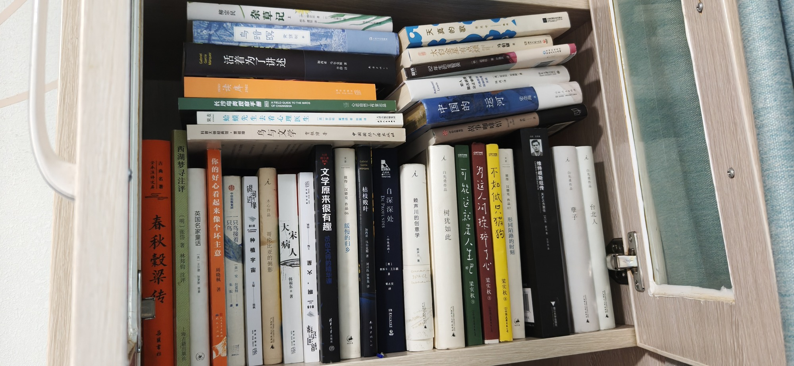

南房东第二层外

- 古典名著 春秋穀梁传 全本注译文 品鼠書社
- 西湖梦寻注评 明张岱著 林邦钧注评 上海古新出版社
- 英国名家童话 (英) 王尔德 狄更斯 等著
- 活着为了讲述 加西亚·马尔克斯
- 读库2502
- 科普大师经典馆·贾祖璋 鸟与文学 贾祖璋著 中国国际广播出版社
- 你的好心看起来像个坏主意 周晓
- 长沙鸟类观察手册 A FIELD GUIDE TO THE BIRDS OF CHANGSHA 心近自然工作室出品
- 柳宗民 杂草记
- 蛤蟆先生去看心理医生 [英] 罗伯特·戴博德 著 陈赢 译 天津出版传媒集团
- 一只鸟接着一只鸟 [美] 安拉莫特 中自出版集团 朱医
- 乌暗暝 黄然树
- 银缘 种植宇宙
- 木心作品 哥伦比亚的倒影
- 大宋病人
- 文学原来很有趣 16位大师的精华课 清事太学出版社
- 枯枝败叶 加西亚·马尔克斯著 刘习良 笋季美译
- 彼得·汉德克 作品 缓慢的归乡
- 自深深处 DE PROFUNDIS [英] 奥斯卡·王尔德 译
- 赖声川的创意学
- 天真的歌
- 82年生的金智英
- 太白金星有点烦 马伯庸
- 中国的运河 史念海 山东人 Anthony Lewis
- 白先勇作品 树犹如此
- 可能这就是人生吧 梁实秋
- 故事咖啡馆 44
- 穷人能否获得公正审判
- 为这人间操碎了心 梁实秋
- 不如做只猫狗 梁实秋 中国人信司
- 彼得·汉德克 作品 形同陌路的时刻
- 维特根斯坦传 天才之为责任
- 白先勇作品 孽子
- 白先勇作品 台北人
共 34 本书，上传于 2026-10-03 07:51:32。